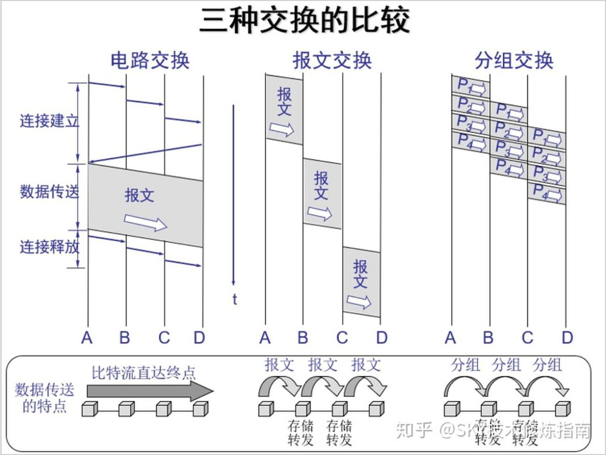

1 Introduction
Click on a tile to change the color scheme:
This is my notes for (self-)learning Computer Network (2021 Spring course at school), mainly following the textbook Computer Networking - A Top Down Approach.
1. 交换方式及其优劣

2. 协议分层结构
协议数据单元 Protocol Data Unit
Ref: PDU
指某一层，或者对等层之间，数据进行传递的数据单位。
比如：物理层的PDU是数据位（bit），数据链路层的PDU是数据帧（frame）……
3. 服务原语
两种服务：面向连接、无连接
4. Reference Models
4.1 OSI
Open Systems Interconnection
自下而上：
4.1.1 Physical Layer
如何在信道上传输bits stream（bits on the wire）
4.1.2 Data Link Layer
Neighbouring: 相邻网络实体（？）间的数据传输
Framing: 从bits stream提取出frame（帧）
4.1.3 Network Layer
host to host: 将packet跨越网络，从源设备发送到目的设备（定位到主机）
Routing: 路由，选取转发路径
4.1.4 Transport Layer
port to port: 从源端口发送到目的端口（进程到进程）（定位到进程）
4.1.5 Session Layer
4.1.6 Presentation Layer
4.1.7 Application Layer
4.2 TCP/IP
Transmission Control Protocol / Internet Protocol
Adopted by ARPANET(Advanced Research Projects Agency Network).
Named by two main protocols.
Concept: Smart host & Simple Network.
自上而下：
Ref: TCP/IP Model
4.2.1 Process/Application Layer
应用层
上面的高层协议：DNS, HTTP, FTP, SMTP, ...
4.2.2 Host-to-Host/Transport Layer
端到端传输：TCP, UDP
4.2.3 Internet Layer
host将packet注入网络，packet独立传输至目的地
定义了packet的格式与协议： IPv4 and IPv6
4.2.4 Network Access/Link Layer
This layer corresponds to the combination of Data Link Layer and Physical Layer of the OSI model. It looks out for hardware addressing and the protocols present in this layer allows for the physical transmission of data.
4.3 Comparison

Data Link Layer: frame
Network Layer: packet
Transport Layer: segment
Application Layer: message
5. International Organizations
ISO: International Organization for Standardization
IETF: Internet Engineering Task Force 互联网工程任务组（每人都可以是IETFer。）
Internet 标准以RFC (Request for Comments) 的形式公开。成为了事实标准。
6. Unit of measurement
PPS: Packet Per Sec.
Delay: 从一端传输至另一端所需的时间
RTT: Round-Trip TIme 往返时延（e.g. ping）
时延带宽积
Throughput 吞吐量
goodput 有效吞吐量（目的地正确接受到的有用信息）
Jitter 时延抖动
7. Network Security
Virus: 需要用户交互不断传播（e.g. 打开email后里面的可执行代码给所有通信录再次发送）
Worm: 蠕虫。无需明显交互；不断扫描网络中存在漏洞的host。
DoS: Denial-of_Service Attack
Botnet: 僵尸网络。感染bot程序。
密码泄露：拖库、洗库、撞库
Packet Sniffing: 嗅探
IP spoofing: 欺骗；伪造源IP
防御手段：身份验证；保密（加密技术）；完整性检查（数字签名）；访问限制（VPN）；防火墙